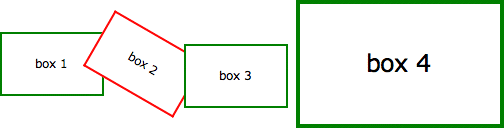
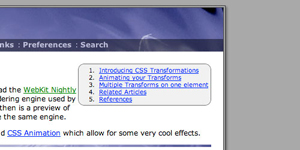
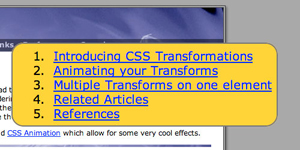
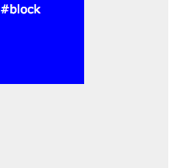
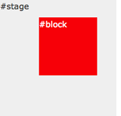
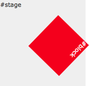
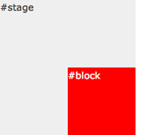

1 - Въведение в CSS трансформациите
Целта на CSS трансформациите е да промените външния вид на елемент в браузъра чрез преходи, ротация или други средства. Когато са дефинирани в стилов документ, трансформациите се прилагат когато страницата бива заредена, така че всъщност не можем да видим анимациите, които се случват. Трансформациите, също така, могат да бъдат приложени при преминаване на курсора на мишката през даден елемент ( mouseover ) или при друг подобен ефект, което ще разгледаме в следващия раздел.
Предложението на Apple за CSS трансформациите изисква способността да променяте гледната си точка и да работите в три измерения, но това все още е далеч. Дори и демонстрираните тук функции няма да се визуализират в други браузъри, докато не бъдат одобрени от органите по стандартизация, които все още се борят с CSS3 модулите.
По-долу са поставили четири идентични DIV елементи стилизирани като кутия от 100 x 60 пиксела с 2 пиксела граница. Впоследствие всеки елемент е променен по някакъв начин с помощта на трансформация (transform):
| box 1 | Транслиране надясно: transform: translate(3em,0); |
| box 2 | Завъртане с 30 градуса по часовниковата стрелка: transform: rotate(30deg); |
| box 3 | Транслиране наляво и надолу: transform: translate(-3em,1em); |
| box 4 | Уголемяване с два пъти: transform: scale(2); |
HTML и CSS кода за този пример са следните:
[1] The art of web
<style type="text/css">
.showbox {
float: left;
margin: 4em 1em;
width: 100px;
height: 60px;
border: 2px solid green;
background-color: #fff;
line-height: 60px;
text-align: center;
}
</style>
<div class="showbox" style="transform: translate(3em,0);">box 1</div>
<div class="showbox" style="transform: rotate(30deg); border-color: red;">box 2</div>
<div class="showbox" style="transform: translate(-3em,1em);">box 3</div>
<div class="showbox" style="transform: scale(2);">box 4</div>
<div style="clear: left;"></div>
Без транслациите и червените граници на втората кутия, щяхте да виждате просто четири идентични кутии, номерирани от 1 до 4. Това, което виждаме в браузърите, които поддържат транслации (Safari, Chrome, Firefox, Opera), прилича повече на следната картинка:

Трябва да се отбележи, че текстът все още може да се селектира в трансформираните елементи, дори когато са завъртяни. Също така, скалирането влияе и на други свойства, включително ширината на границата, размера на шрифта и други.
2 - Анимиране на трансформациите
CSS Transformation сама по себе си е мощен инструмент за разработчиците, но способността да създаваме анимации използвайки същите ефекти -webkit-transition е много по-вълнуващо. Преместете курсора на мишката върху следните четири полета за демонстрация:
Това, което виждате по-горе, са четирите полета от предишната секция в техните състояния по подразбиране. Когато поставите курсора на мишката върху което и да е от полетата, обаче CSS трансформацията се прилага като анимация за една секунда. Когато мишката излезе извън полето, анимацията е прекратена, като всяка клетка се връща обратно към оригиналното си състояние.
И можем да направим всичко това без да използваме JavaScript - само HTML и CSS! Ето и пълния код за първата кутия, която се движи надясно и обратно:
[1] The art of web
<style type="text/css">
.showbox {
float: left;
margin: 4em 1em;
width: 100px;
height: 60px;
border: 2px solid green;
background-color: #fff;
line-height: 60px;
text-align: center;
-webkit-transition: 1s ease-in-out;
-moz-transition: 1s ease-in-out;
-o-transition: 1s ease-in-out;
transition: 1s ease-in-out;
}
.showbox.slideright:hover {
-webkit-transform: translate(3em,0);
-moz-transform: translate(3em,0);
-o-transform: translate(3em,0);
-ms-transform: translate(3em,0);
transform: translate(3em,0);
}
</style>
<div class="showbox slideright">box 1</div>
Ако това ви се струва готино, то вероятно ще бъдете още по-развълнувани да разберете, че CSS анимацията може да се прилага не само върху трансформации, но и върху други свойства като: цвят, прозрачност и много други.
В следващия пример, полето отляво първоначално е по-малкото от двете, зелено е и има квадратна граница, докато полето отдясно е по-голямо, с червена граница и заоблена граница. Придвижвайки курсора на мишката върху което и е да е от полетата, ще бъде задействана анимация, която ще копира изгледа на едно от полетата върху другото и обратно.
Отново използваме само HTML и CSS, за да направим това. Без CSS Transforms двете кутии все пак ще променят стиловете и изгледа си, но това ще се случи по-скоро веднага, докато с анимациите се случва в продължение на една секунда.
За по-сложни примери, можете да прочетете как можем да използваме JavaScript за започване на анимация. За алтернатива на CSS преходите, и по-добър контрол над анимационните пътища и времето, можете да използвате Window.requestAnimationFrame.
3 - Множество трансформации върху един елемент
За да приложите повече от една трансформация върху даден елемент е нужно просто да ги изброите една след друга, разделени с интервал. Например, за да направите анимирано меню, можете да използвате следващия код:
[1] The art of web
<style type="text/css">
#submenu {
background-color: #eee;
-webkit-transition: 1s ease-in-out;
-moz-transition: 1s ease-in-out;
-o-transition: 1s ease-in-out;
transition: 1s ease-in-out;
}
#submenu:hover {
background-color: #fc3;
-webkit-transform: rotate(360deg) scale(2);
-moz-transform: rotate(360deg) scale(2);
-o-transform: rotate(360deg) scale(2);
-ms-transform: rotate(360deg) scale(2);
transform: rotate(360deg) scale(2);
}
</style>
Забележете, че IE10 вече не използва представка за преходи, но представката -ms- е все още задължителна за трансформации.
С кода, който е показан по-горе, след като придвижим курсора на мишката върху менюто, то ще промени цвета си, ще се завърти и ще стане два пъти по-голямо. Всичко това ще се случи в рамките на една секунда, както е показано тук:
|  | <=> |  |
Тези ефекти вече са достъпни и в последните версии на Safari. Това означава, че всички OSX потрбители би трябвало да виздат тези ефекти. Ваше е решението дали е добра идея да ги добавите към уеб страницата си.
4 - Анимациите в действие
Сега ще разгледаме още един пример как можем да се забавляваме, комбинирайки различни ефекти в една анимация. Може би ще успеете да предвидите какъв е очаквания резултат като погледнете СSS кода?
[1] The art of web
<style type="text/css">
/* initial state */
#outerspace {
position: relative;
height: 400px;
background: #0c0440 url();
color: #fff;
}
div.rocket {
position: absolute;
bottom: 10px;
left: 20px;
-webkit-transition: 3s ease-in;
-moz-transition: 3s ease-in;
-o-transition: 3s ease-in;
transition: 3s ease-in;
}
div.rocket div {
width: 92px;
height: 215px;
background: url(/images/rocket.gif) no-repeat;
-webkit-transition: 2s ease-in-out;
-moz-transition: 2s ease-in-out;
-o-transition: 2s ease-in-out;
transition: 2s ease-in-out;
}
/* hover final state */
#outerspace:hover div.rocket {
-webkit-transform: translate(540px,-200px);
-moz-transform: translate(540px,-200px);
-o-transform: translate(540px,-200px);
-ms-transform: translate(540px,-200px);
transform: translate(540px,-200px);
}
#outerspace:hover div.rocket div {
-webkit-transform: rotate(70deg);
-moz-transform: rotate(70deg);
-o-transform: rotate(70deg);
-ms-transform: rotate(70deg);
transform: rotate(70deg);
}
</style>
{kind=link}
{kind=link}
Ето и HTML кода:
[1] The art of web
<div id="outerspace">
<div class="rocket">
<div><!-- rocket --></div>
.rocket
</div>#outerspace
</div>
Когато ги сглобите се получава това:
Ако използвате Safari 3 може да забележите известни проблеми с анимацията, особено когато ракетата се връща в първоначалната си позиция. В последната версия на WebKit всичко е доста подобрено. Също така, анимациите в Opera са леко непостоянни и не всички елементи са анимирани.
Това, което се случва в анимацията която разгледахме по-горе, е че DIV елемента се транслира върху екрана, докато картинката в него се завърта. Просто!
За браузъра това, което се случва, е, че когато преместите мишката върху фона, ракетата се транслира от дъното наляво надясно за период от 3 секунди (translate()) и също така се завърта със 70 градуса по посока на часовниковата стрелка през първите 2 секунди (rotate()). Ефектът е елементарен, но показва потенциала на CSS анимациите.
За повече контрол върху анимационните пътища и времето, можем да използваме WebKit Keyframes. Те също позволяват на анимацията да започне автоматично и да продължи постоянно, а не само в отговор на някое от събитията на страницата.
5 - Множество времеви функции
В този пример, прилагаме четири различни прехода, използвайки четири различни времеви функции.
Когато придвижим мишката върху частта отдясно (:hover), синята кутия ще се завърти, ще промени цвета си от синьо на червено и ще се премести от горния ляв ъгъл, в долния десен ъгъл. Това ще се случи в рамките на све секунди.
Първото нещо, което можем да забележиим, е че движението на кутията е по-скоро извито, отколкото право. Това е защото използваме времевата функция ease-out за хоризонталната транслация и ease-in времевата функция за вертикалната транслация.
За да направим анимация с извит или дори произволен път, ни е нужно да използваме JavaScript, за да контролираме анимацията.
По време на анимацията, смяната на света от синьо в червено се случва в рамките на първата секунда от прехода. След това, кутията се завърта, което се случва през втората секунда от прехода.
   
Номерът на това е, че вместо да се дефинира -webkit-transition като единично свойство, можем да го разделим в съставни части. Използваме също -webkit-transition-delay, което ни позволява да настроим отправната точка на различните ефекти.
Ето и CSS кода:
[1] The art of web
<style type="text/css">
#block {
...
left: 0;
top: 0;
...
background: blue;
...
-webkit-transition-property: left, top, background, -webkit-transform;
-webkit-transition-duration: 2s, 2s, 1s, 1s;
-webkit-transition-timing-function: ease-out, ease-in, linear, ease-in-out;
-webkit-transition-delay: 0, 0, 0, 1s;
...
}
#stage:hover #block {
left: 100px;
top: 100px;
background: red;
-webkit-transform: rotate(360deg);
...
}
</style>
Правилата, които се отразяват на фона са подчертани. Техния преход се случва в рамите на първата секунда (0s delay, 1s duration). Трансформацията за завъртането се случва във втората секунда (1s delay, 1s duration).
За браузъри, различни от Chrome -webkit- представките трябва да бъдат повторени, както и представката трябва да бъде заменена с една от следните: -moz-, -o- и -ms-. С изключение на свойството *transition*, което не изисква представка за Internet Explorer 10 и по-новите версии.
Firefox изисква всички части да бъдат зададени (дори и със стойност 0) в свойството -moz-transition-delay. Това означава, че 0s, 0s, 0s, 1s ще работи в примера по-горе.
6 - *Hovering* върху един елемент, за да се отрази на друг
Често искаме да задействаме една анимация при клик или придвижване на мишката на друго място в страницта, а не върху конкретния елемент. С JavaScript това може да бъде направено с помощта на event handler, който да промени името на класа на елемента, който искаме да анимираме. В такъв случай можем да зададем трансформация асоциирана с новия клас.
С помощта на CSS, има няколко опции за въздействие върху свързани елементи. Това може да се случи със селектори като: > (child), +(adjacent sibling) и ~ (general sibling) комбинатори.
Всички предходни примери изискват директно събитие hover или върху самия елемент, или върху неговия контейнер, в този пример синята кутийка се анимира само когато задържите курсора си над червената кутия.
Съответният CSS код е представен отдолу. Обърнете внимание, че използваме + съседен комбиниран брат, за да таргетираме # box2 когато мишката е върху # box1 . Комбинаторът ~ ни позволява по-голяма гъвкавост, като можем да таргетираме елементи, които са по-далеч от действащия елемент.
[1] The art of web
<style type="text/css">
#box2 {
position: absolute;
left: 120px;
...
background: blue;
...
-webkit-transition: 1s ease-in-out;
-moz-transition: 1s ease-in-out;
-o-transition: 1s ease-in-out;
transition: 1s ease-in-out;
}
#box1:hover + #box2 {
-webkit-transform: rotate(360deg);
-moz-transform: rotate(360deg);
-o-transform: rotate(360deg);
-ms-transform: rotate(360deg);
transform: rotate(360deg);
left: calc(100% - 102px);
background: yellow;
}
</style>
Internet Explorer 11 не може да анимира със стойности, които са зададени с помощта на функцията calc(). Вместо това, ще трябва да използвате фиксирани стойности.
Разбира се, можем да анимираме първата кутия по същото време, когато таргетираме нейните сродни такива:
Уверете се, че не местите мишката извън елемента. В такъв случай анимацията ще спре.
Тези примери работят, както е предвидено в Webkite (Safari, Chrome), Firefox и Opera. Също така работят и в Internet Explorer 10.
7 - Контролиране на анимациите
В по-горните примери вероятно сте забелязали странно поведение при приключването на анимациите - особено, когато преместим мишката извън елемента преди анимацията да е завършена.
Кутията в анимацията по-долу ще се качи бавно и след това ще се изстреля вдясно използвайки функция за extreme cubic-bezier синхронизиране, което кара елемента да стартира бързо и след това да се забави в края.
Когато преместим мишката извън елемента, той няма да се върне по същия път, тъй като вертикалната анимация ще бъде на първо място и кутията ще се движи бързо от дясно на ляво, преди да се забави.
CSS кода за този пример:
[1] The art of web
<style type="text/css">
#stage {
position: relative;
height: 4em;
background: #efefef;
text-align: center;
}
#box {
position: absolute;
left: 0;
bottom: 0;
width: 100px;
background: red;
line-height: 2em;
color: #fff;
-webkit-transition: 1s bottom, 4s 1s left cubic-bezier(0,1,1,1);
-moz-transition: 1s bottom, 4s 1s left cubic-bezier(0,1,1,1);
-o-transition: 1s bottom, 4s 1s left cubic-bezier(0,1,1,1);
transition: 1s bottom, 4s 1s left cubic-bezier(0,1,1,1);
}
#stage:hover #box {
left: calc(100% - 100px);
bottom: 2em;
}
</style>
Можем и да контролираме анимацията в двете посоки. В този случай анимацията ще изпълнява всичко в обратен ред:
Номерът е да се преминем към оригиналните настройки за преход (:hover) и за "non-hover" да използваме преход, който ги обръща:
[1] The art of web
<style type="text/css">
#stage {
position: relative;
height: 4em;
background: #efefef;
text-align: center;
}
#box {
position: absolute;
left: 0;
bottom: 0;
width: 100px;
background: red;
line-height: 2em;
color: #fff;
-webkit-transition: 1s 4s bottom, 4s left cubic-bezier(1,0,1,1);
-moz-transition: 1s 4s bottom, 4s left cubic-bezier(1,0,1,1);
-o-transition: 1s 4s bottom, 4s left cubic-bezier(1,0,1,1);
transition: 1s 4s bottom, 4s left cubic-bezier(1,0,1,1);
}
#stage:hover #box {
left: calc(100% - 100px);
bottom: 2em;
-webkit-transition: 1s bottom, 4s 1s left cubic-bezier(0,1,1,1);
-moz-transition: 1s bottom, 4s 1s left cubic-bezier(0,1,1,1);
-o-transition: 1s bottom, 4s 1s left cubic-bezier(0,1,1,1);
transition: 1s bottom, 4s 1s left cubic-bezier(0,1,1,1);
}
</style>
Това може да ни бъде полезно за ефект върху меню или бутон. Така можем да накараме елемента да се появи бързо и след това да се скрие бавно или обратното.
Не забравяйте, че преходите, зададени с :hover са тези, които ще се използват, когато се мишката се придвижи върху елемената. Настройките за преход по подразбиране ще се използват при връщане на елемента към първоначалното му състояние.
8 - Референции
- 3D Transforms and Animations [CSS]
- Transition Timing Functions [CSS]
- Bouncing Ball Animation [CSS]
- Infinite Animated Photo Wheel [CSS]
- An actual 3D bar chart [CSS]
- Photo Rotator with 3D Effects [CSS]
- Fading slideshow with a touch of JavaScript [CSS]
- Controlling CSS Animations [JAVASCRIPT]
- CSS Animated Fireworks [JAVASCRIPT]
- Animating objects over a curved path [JAVASCRIPT]